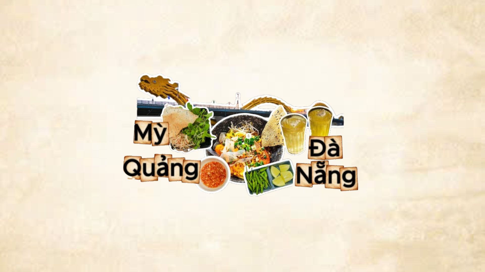

Đà Nẵng

Đà Nẵng nằm giữa miền Trung, hội tụ tinh hoa ẩm thực Quảng – Huế, tiếp biến văn hoá giao thương. Ẩm thực đậm đà, mộc mạc, trọng rau sống – mắm – gia vị cay nồng; chú trọng sự hài hoà rau – thịt – nước chấm.
1. Đôi nét lịch sử & nguồn gốc
- Giao thoa xứ Quảng: Ảnh hưởng truyền thống Quảng Nam (mì Quảng, bún mắm nêm), cùng sản vật ven biển phong phú.
- Thương cảng – giao lưu: Tiếp nhận kỹ thuật, gia vị từ các vùng và phương Tây trong thời cận – hiện đại.
- Đề cao nguyên liệu tươi: Rau sống, các loại mắm, thịt heo luộc, hải sản – kết nối bằng nước chấm “linh hồn” món ăn.
2. Đặc trưng & thẩm mỹ
- Vị đậm nhưng thanh: Đậm đà gia vị, cay nồng vừa phải; cân bằng bằng rau sống, đồ chua.
- Trình bày giản dị: Bày biện mộc mạc, nhấn màu rau – ớt – đậu phộng rang.
3. Món tiêu biểu
- Mì Quảng: Sợi to dẹt, nước lèo sánh nhẹ, nhiều rau sống.
- Bánh tráng cuốn thịt heo: Thịt heo hai đầu da, bánh tráng phơi sương, mắm nêm dậy mùi.
- Bún mắm nêm: Bún, thịt quay/luộc, mít non, đậu phộng – mắm nêm là điểm nhấn.